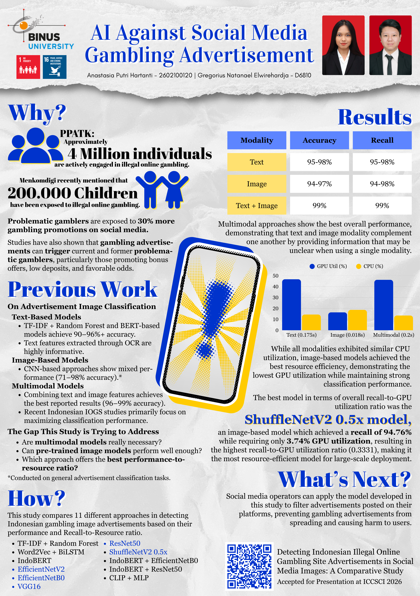

June 2026
This project was completed as part of my bachelor's degree final project. As someone passionate about applying AI to solve real-world societal challenges, I focused on detecting illegal online gambling advertisements, which play a significant role in the growing prevalence of illegal online gambling in Indonesia.
This research was accepted for presentation at the ICCSCI 2026 conference under the title "Detecting Indonesian Illegal Online Gambling Site Advertisements in Social Media Images: A Comparative Study." The project would not have been possible without the guidance and support of my advisor, Gregorius Natanael Elwirehardja.

Try this project here: Hugging Face Space